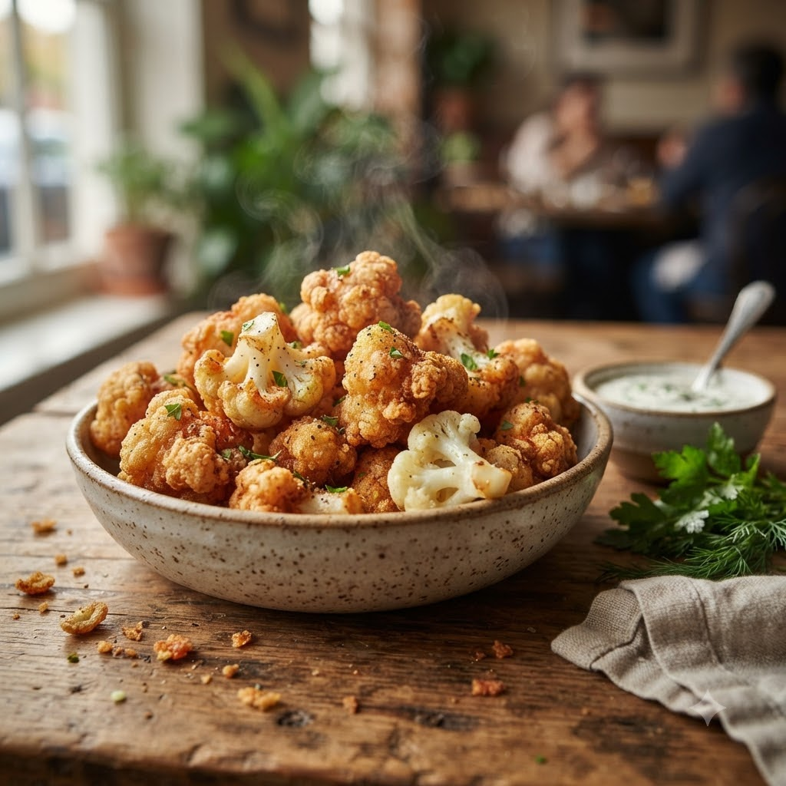

Crispy Cauliflower Bites

Crispy Cauliflower Bites
Airfryer – Fry 200°C 16 min — Serves 4
🔥 Airfryer🍽 Serves 4
Ingredients
- 1 medium cauliflower, cut into florets
- 1/2 cup flour
- 1/2 cup water
- 1 tsp garlic (lehsun) powder
- 1 tsp paprika
- Salt to taste
- 1 cup breadcrumbs
- Oil spray
- 2 tbsp hot sauce + 1 tbsp butter, melted (toss at the end)
Method
1Preheat: Preheat the Airfryer to 200°C for 4 minutes before adding the food to the basket.
2Whisk flour, water, garlic powder, paprika and salt into a thick batter.
3Dip florets in batter, then coat in breadcrumbs.
4Spray with oil and arrange in a single layer in the basket.
5Air-fry at 200°C for 16 minutes, shaking halfway, until golden; toss in hot sauce and butter before serving.